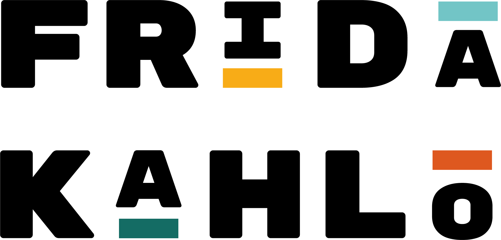

De opdracht is ontwikkel met je team van RV, MV en SD studenten een concept voor een speelse immersieve ruimte. Je ontwerp hiervoor een interactieve installatie met een mapped projectie die geinspireerd is op het werk van de Nederlandse kunstenaar van jullie keuze. De installatie is ruimelijk en immersief, interactief, hedendaags en spannend maar veilig. Alle ruimtes samen vormen een kunstspeeltuin.
Voor de user input heb ik voor een Arduino gekozen omdat je veel keuze heb om iets te verzinnen en maken zoals ik zat eerst te twijfelen tussen een licht of laser sensor te gebruiken maar toen bedacht ik me meerder mensen hebben er voor gekozen om met een PIR sensor te werken dat is eigenlijk de licht sensor. Dus toen besloten we als een groep zijnde maar een magneet sensor te doen dat werkt op een magneet en dat leek ons wel een leuk idee om te doen en daarnaast paste het heel bij ons idee dat we hedden om te maken.
Voor de user output gebruiken we magneet sensoren die ik als SD'er heb gebruikt om de led licht aan te laten gaan bij de juiste vraag. De magneet sensor werkt als je er een magneet er bij houdt. Want als je de magneet bij de magneet sensor weg haalt dan gaan het led lampje uit dit hebben wij toegevoegd op de volgende manier je hebt in totaal 3 vragen en elke antwoord bestaat uit 3 bloemen en je moet de juiste bloem pakken en in de kroon zetten. Want als je de juiste bloem pakt zit er aan de onderkant een magneet maar die is heel goed weg gewerkt door de RV'ers dus je weet niet welke een magneet heeft. In de kroon zitten 3 magneet sensoren en als met de juiste bloem die dus de magneet heeft de magneet sensor in de kroon tikt dan gaat er een lichtje branden en als je de foute waar geen magneet in zit tegenaan tikt dan blijft het lichtje uit.